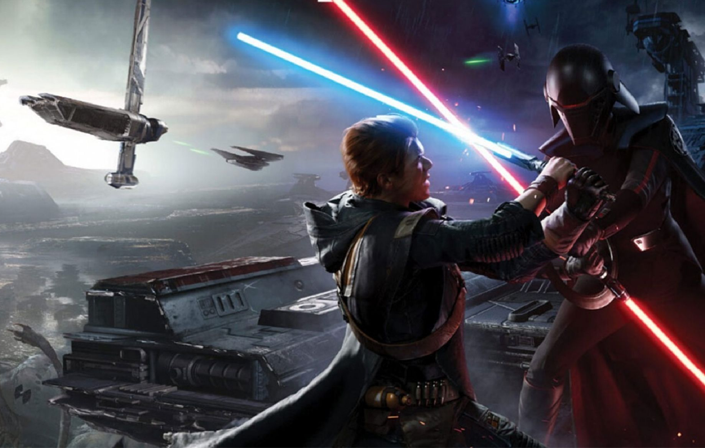

Jedi: Fallen Order pushes all the right buttons for a Star Wars action-adventure. It’s a genre remix that samples the combat and exploration of a lightened-up Dark Souls and the action and energy of Uncharted, and that works out to be a great fit for the return of the playable Jedi. The story is a dark one, which is appropriate for a time in the series – between episodes 3 and 4, when things are at their bleakest for the Jedi and the galaxy as a whole. It’s absolutely drenched in the trauma of the aftermath of Palpatine and Vader’s purge of the Jedi Order five years earlier, with both our young ginger Jedi hero Cal Kestis and his new mentor Cere Junda defined by their survivors’ guilt and remorse over how they escaped Order 66. Cal is respectably acted by Cameron Monaghan, though he never really develops a strong personality that separates him from other generic Jedi characters. He’s a standard-issue good guy through and through, and even at his lowest he’s never remotely tempted by darkness and vengeance – he just needs a solid pep talk. Cere, on the other hand, far outshines him with an anguished performance from Debra Wilson, especially in the latter half when she relives her darkest moments and confronts the consequences of her actions with appropriate revulsion on her face. Even the main antagonist, the Imperial Inquisitor Jedi hunter known as Second Sister, has unexpected depth – a pleasant surprise after the two-dimensional villainy of similar characters in the Star Wars: Rebels animated series.
All of that darkness means there’s less of the upbeat swashbuckling charm of the original trilogy, though a little bit of it shines through. We get a fair amount of comic relief from the four-armed captain Gris of the good ship Mantis and the ever-present, ever-adorable chicken-legged droid, BD-1 (often pronounced “Buddy”). He’s barely bigger than Luke’s binoculars, but he’s extremely useful. Not just through his hacking abilities, which serve as an extension of your own, but because he’ll hop off your back to draw your attention to things you can scan to unlock in the in-game encyclopedia, and the lights on the back of his head are used to indicate your health status without cluttering up the screen too much. The main quest sends our freckle-faced Force-user and crew on what amounts to a Star Wars version of an Indiana Jones adventure (which must make George Lucas proud) that spans across several planets. You’re thrown into not only the sterile metal corridors of Imperial facilities but also the dense jungles of the Wookiee homeworld of Kashyyyk, the angry red dust of Dathomir, and other lesser-known worlds with their own look and feel, including ancient alien tombs that you raid.
Exploration is key to these maps, and both chests full of cosmetic loot and special Force echos (the Jedi equivalent of audio logs) are scattered everywhere. It gives you plenty of reason to veer left when the vague indicator on the map screen suggests you should turn right – or to make a return trip to a previously visited world – just to see what you can find after you’ve gained a new ability. On rare occasions, usually after a tough optional fight or moderately tricky puzzle, you’ll even find a chest with something that affects gameplay, such as an extra health canister or one third of a permanent increase to your health or Force capacity. It’s enough reward to keep the urge to turn over every rock going. From the opening scene on a shipbreaking world where the remains of the prequel trilogy era are being literally torn apart for scrap as the Empire builds up its new fleet, the attention to detail and obvious love for the source material shows. Say what you will about EA’s Star Wars games to date, but both Battlefront games look and sound amazing and authentic, and Jedi Fallen Order is up to that same standard. The only thing I’d call out as offensively ugly are the wookiees, due to the fact that graphics technology has yet to really nail a human head’s worth of hair much less an entire walking carpet. All of that detail isn’t free, and while it aims for 60 frames per second in performance mode on Xbox One X and PlayStation 4 Pro, it doesn’t always stay on target. Even a PC with a GTX 2080 struggles with that on ultra settings. And, like many Unreal Engine-powered games, when you’re entering a new area there tends to be a moment of chop as things load into place, though it always cleared up by the time the action started. The screen is mercifully uncluttered of minimaps or quest markers, letting the great environments shine. When you pull up the map screen, the hologram-style projection is minimalist and not all that helpful for precise navigation, but it does give you an idea of where you’ve been, how much is left to do in an area, and the direction you should head in. That’s especially useful when you’re trying to make it back to your ship after completing a story objective, since there is no fast-travel system and it’s easy to get turned around or go in circles. I also genuinely appreciated that it clearly marks where you can’t yet go because you don’t have the right abilities (so don’t waste your time until later in the story) and highlights new places you can go with your recently unlocked abilities. It’s a huge time-saver. The story doesn’t take long at all to throw Cal headlong into the first of many Uncharted-style action sequences where everything’s exploding around him but falling in the exact right position to allow him to jump off of it or use it to climb out of a hole. Jedi: Fallen Order has incorporated just about every trick in the third-person action game playbook: climbing suitably bumpy walls, shimmying along beams, sliding down slopes, swinging from ropes, wall-running, and more, and the thrill ride is at its best when it’s chaining all of these together for a sequence that requires a bit of timing to pull off. (Falling instantly respawns you at the beginning of the sequence with a small bite out of your health bar, so the stakes aren’t that high if you miss a jump a few times.) This only gets better as more Force abilities are introduced and enhanced over the entire campaign, giving it a different flavor than the similar antics of Nathan Drake and Lara Croft.
The same thing goes for how the lightsaber interacts with the environment: basically it doesn’t, aside from leaving some temporary glowing scars or shattering pottery so fragile that it breaks if you just brush up against it. Being locked out of an area by a simple door seems a little silly when you’re holding the galaxy’s most effective blowtorch in your hand and cutting through doors is a trick we’ve specifically seen Jedi do in the movies. It’s actually fairly rare that you’ll see items around the levels that can be cleaved through, aside from occasional vines or cables blocking your way. This is, of course, a video game, and a lot of that sort of thing is to be expected, but it does unavoidably dilute the Jedi power fantasy. The Force powers Cal gradually unlocks are also surprisingly conservative relative to a lot of Star Wars games. There are only three active abilities: freeze/stun, push, and pull – no mind tricks, no super speed, no lightning from your fingertips. However, they’re all useful in multiple ways, such as combat and puzzle-solving, so it feels more diverse than that. Plus, I will never get tired of approaching a powerful enemy and simply Force-pushing them off a ledge, avoiding a dangerous fight entirely. And any flying enemies can be quickly dealt with by using Force pull to bring them within range of your lightsaber. Thematically, it’s a conflicting choice to have your Force meter recharged by scoring blows against enemies with your lightsaber – that kind of aggression isn’t really compatible with the Jedi philosophy as we know it – but again, video game! I will say that, given that this is the same year Control came out, I longed for a similar telekinetic ability to grab items from around the environment and smash the hell out of enemies with them. Remedy wins that round.
It’s been ages since we got a great single-player Star Wars action game, but Jedi: Fallen Order makes up for a lot of lost time. A strong cast sells a dark story while keeping things fun and loyal to Star Wars lore, and fast, challenging combat mixes with energetic platforming, decent puzzles, and diverse locations to explore for an all-around amazing game.
Comment Here